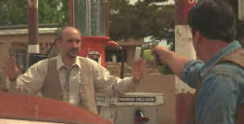

|
Redeeming the Writer:

A Conversation with Frank
Darabont
By Stu Kobak
Every decade seems to bring an explosion of new
faces to filmland. They surface as if created by some underground crashing of atoms. They burst
from a pile of old video tape boxes having absorbed every frame of stored film to touch them, al la
Quentin Tarantino; or they’re born with a video camera protruding from the head, a filmmaking
ship ready to raid the rough seas of Hollywood, like Robert Rodriguez. It’s an ode to instant
recognition played over and over again at the film festival circuits. An army of untried warriors
emerges camera in hand to revitalize the film industry. But not every filmmaker is another
immaculate conception. Some develop slowly, moving through the system, in some sense a throwback to
studio days of yore. When 39 year old Frank Darabont erupted on the film scene big time in 1994 as
writer and director of The Shawshank Redemption, the soft downy beard of immaturity may have
been long gone from his face, but behind the intense gaze of the artist were years of hard work
climbing the industry latter.
 |
|
Frank Darabont enjoys a scene in front of the
camera in John Carpenter's Vampires. ©Columbia |
Darabont’s success prior
to The Shawshank Redemption has been primarily as a writer, with a specialty as a script
doctor, although he did direct the cable movie Buried Alive in 1989. Frank shares screen
credit for the script of Mary Shelley’s Frankenstein. "Oy, my Waterloo, my worst
experience. Actually, the script was great, the movie was a mess. You can’t really judge the
script based on what you saw on the screen. It got rephrased and messed with every inch of the way.
Cumulatively, the effect was the movie is quite a bit different than the screenplay that I wrote.
So I was very, very disappointed and I was very proud of the screenplay." Darabont wasn’t
first out on the Frankenstein screenplay. "I came in because of my love for Shelley’s book
and I felt that the screenplay as it stood had veered far a field from Shelley’s books and I was
anxious to get back closer to the book. I was proud of that script. I think that was every bit as
good as Shawshank. You ask me for my best work in features and I’ll pull out those two
scripts, Shawshank and Frankenstein and hand them to you. I think what it boils down to is
that the director there had a different idea than the writer did. Of course, mine is an absolutely
subjective opinion, I’ve met people who thought it was absolutely brilliant. I was surprised by
that. "I’ve asked myself many times, when you have a good script, why do you have to mess
with it. I don’t want to come off sounding sour grapes. I have been treated well as a writer, but
those occurrences have been rarer than my other experiences." My comment that a director likes
to put his stamp on a screenplay elicited this response: "That may not be wrong, but then
again, in all fairness, no two people think alike, and what one person, in this case the writer,
sees as correct is maybe not going to be correct for the guy behind the camera. I don’t believe
sets out to make a bad movie or to deteriorate a good script, it’s just that they think
differently. That’s, of course, the danger in having the writer and director be a separate
person. Sometimes that collaboration works. You’ve got a writer and a director thinking right
along the same lines and that’s something really special, or you’ve got a director who can
really improve what’s up there. Ego may have something to do with it, but there is this factor of
just seeing things differently. A director has to walk on to the set every day convinced he’s
making the best version of the movie that he can."
Frank Darabont grew up mostly in LA from the age of
twelve, and before that he bounced back and forth along the coast from San Francisco and back to
LA. "I was living in Chicago until the age of five on the immigrant side of town. I was born
in France in a Hungarian Refugee Camp. My folks split Hungary when the Russian tanks rolled in 1956
and I was born three years later. It may be easy to leap at the idea of growing up in the shadow of
Hollywood as a direct inspiration for a career in films, but Darabont isn’t so sure where the
impetus to seek out his fate came from: "I don’t know particularly. I think these are things
where you’re born with an ingrained love of something and I think I was born with a love for what
I’m doing now—basically telling stories mostly as it applies to film"
The writer/director went to the movies every chance he could as a kid.
"I loved movies when I was a kid. That, of course, really influences you, that more than
anything makes you want to do it, if that’s your goal, your aim. More than movies for me, it was
also books. I’ve always loved story telling, but books always had a special place for me. People
pick their own path. Who knows why. I was just bound and determined to do this for a living."
Were there any particular inspirations for Frank Darabont as a kid? "This is going to sound
like a glib answer, but its not. Every movie that I ever saw that grabbed me, transported me, that
told me something. I loved David Lean, I loved John Ford, I loved Kubrick. I also loved all the bad
B monster movies. I’ve got a few Mants (Dante’s take-off on monster movies) in my background. I’m
up at two o’clock in the morning watching Attack of the Mushroom People. This is really
cool."
Breaking into an industry as seductive as film has got to combine elements
of determination and luck." . ‘Let me give you some of the background of it. It was an
ongoing process of trying to find the path, which isn’t easy and there’s no prescribed path to
take I should point out. After I graduated high school I was working whatever jobs I needed to
survive, to make ends meet. A turning point for me was when I hired on my very first job in movies.
I was hired as a production assistant on a movie called Hell Night, this really bad low budget
movie starring Linda Blair. It was 1980, three years after I graduated high school. I worked that
gig and then I did another production assistant gig the following year and then I moved into the
art department. The art department is also called the set department where you are responsible for
the sets and the locations. Anything that you see on the screen that is part of the environment is
the job of the art department; that involves building sets, moving walls, bringing in couches,
painting shit on the walls, whatever that entails. And that was a fabulous experience for me. I did
that for six years. In the art department I was a set dresser. I always angled for the set dresser’s
job which was the least sought after job. But it was the one I wanted the most because as a set
dresser you’re always, always on the set. You’re in the eye of the hurricane. You’re right at
the director’s elbow. You’re tweaking the set for every shot. As such you’re in perfect
position to observe and absorb the process of filmmaking. It’s the best film school that there is
if you want to be a director. It was great experience. The other advantage that it provided me
which a normal nine-to-five gig never did, is that every job had an expiration date on it. I’d go
and I’d work six weeks, two months, work my ass off around the clock and when I was I done I’d
have enough money in the bank to stay home for a month and write. I was never one of these guys
that can come home after working a nine hour day and sit down and write, I just can’t, so I’d
buy myself a month of time and focus all my attention on writing. As soon as the bank account
bottomed out, I’d get on the phone to my pal Greg Melton who was an art director by then and say,
Greg get me on the next show, I’m broke and so I could work another one."
"Somewhere along the way I acquired an agent, a
particularly good one, willing to put the time and effort into developing a new writer’s career,
which is quite rare. His name was Alan Green, to whom Shawshank was dedicated by the way.
Like only nine years after graduating high school I started working as a writer and haven’t
stopped since."
"During that time I was not just writing solo but I was also writing
as a partner with my friend Chuck Russell(director of The Mask. Funny enough Chuck was the
guy who hired me to be a PA on Hell Night. He was production manager. If you would have
asked me at the time if Chuck Russell and I would still be hanging out and writing scripts together
years later I would have looked at you like you were crazy. I’m not even sure if I liked the guy
when I first met him," related Darabont with laughter in his voice. "Somewhere along the
way we became pals, we became writing partners and we struggled as writers together as well and
that paid off in 1986 with my first produced credit which was Nightmare on Elm Street III,
which Chuck and I wrote together and he directed."
Speaking about friend Chuck Russell’s hit movie, Darabont said: "I
loved The Mask. I thought it was just a hoot. It’s really funny because The Mask
and Shawshank came out the same year and you can see how wildly different those two movies
are and they completely represent these wildly different sensibilities that Chuck and I have. The
Mask is pure Chuck Russell. Shawshank is pure Frank Darabont. You wonder how the hell we
ever worked together, but for some reason we really did have a good collaboration and we still do.
Chuck’s great strength is what I call ‘the big wacky’. He brings out the wilder ideas, the
great ideas to get big scenes out of me. On the other hand I play anchor to Chuck Russell and kind
of ground him in human character things as we go along, so it’s a great balance."
Russell did not get credit for the writing he did on The Mask as
Darabont relates: "There was an arbitration that unfortunately Chuck lost. The Writer’s
Guild arbitration always stacks the deck against the director, particularly when a rewrite happens.
It’s understandable because they want to protect the writer from being ripped off. But then
again, I think there are some unfair cases because Chuck did do a substantial rewrite that he's
uncredited for. He’s too much of a gentleman to mention that, but I’ll mention it on his
behalf. Arbitrations are funny things. You win some, you lose some. It all depends on somewhat
nebulous guidelines provided by the Guild."
The unqualified success of The Shawshank
Redemption is a major plateau in the career of this film artist. "I don’t know if there
is necessarily like one turning point. I think there are constant turning point as you go along. It’s
a bit of an organic on-going process. I mean, Shawshank certainly was a turning point . That’s
been a nice turning point. Ultimately I don’t know what the result of that is because it’s
still quite recent. I don’t know where that will take me, but it’s lovely to have the
opportunities that it’s provided."
Talking about The Shawshank Redemption is a pleasure, as you
might imagine, for its director. I asked Darabont if he would call Shawshank a dark fairy
tale. "Actually, I think I would call it a very light fairy tale. I think it’s a very
uplifting film...I mean I goes through darkness certainly. You can’t reach for the light without
going through darkness. Even back when I first read it in 1982, I thought my God, what an uplifting
and moving and inspiring thesis on reaching for light. For me, that’s what it was all about.
Consequently, I was very surprised in this day and age of Natural Born Killers some people
complained about the violence in my movie. Come on." Though there is violence in Shawshank,
the director does not feel that it’s exploited: "I don’t really think that it’s
glamorized in the way Hollywood sometimes has a tendency to glamorize violence. In a way it’s
very objective."
Darabont can spend hours at the typewriter totally focused on his work. He
even forgets to eat with coffee as the riving force. It took him a compact eight weeks to write the
wonderful script for Shawshank Redemption. When directing Shawshank Frank
found the task extremely physically taxing, but he was up to the task.
Shawshank has very heavy narration, It’s an element that can sink
a film, yet it works wonderfully in Shawshank, cashing in on the magic of the mellifluous
tones of Morgan Freeman, who plays Red. "The narration gave me pause when I was writing the
script. Like halfway through I suddenly froze and said ‘Oh my God what am I doing.’ Because
people do sometimes bitch about narration. When it doesn’t work it really doesn’t work. Like
Blade Runner. Blade Runner always struck me as an example of narration put on not as an
intrinsic integral part of the story telling but somebody’s idea of a Band-Aid so the audience
understands what the hell’s going on. At times I found it intrusive to an extreme, particularly
when Roy Batty dies and there’s Ford watching him in the rain and he’s had this amazing little
monologue about what he’s seen and experienced in his life and then he dies and it’s so
emotional and then that stupid thudding narration kicks in. "I don’t know why he saved my
life there, maybe he just didn’t want to die alone,..." I know all this shit. I don’t need
to be told and have the emotion of the moment undercut. For the most part I can sit there and watch
the movie either way with or without narration. But maybe that’s a reason not to have narration,
if you can watch it one way or the other. In Shawshank, the novella was written by Stephen
King in the first person. It had sought of very amiable folksy feel to the narrative as if Red
himself were telling you the story. Red’s voice was so present to me in the book I really couldn’t
imagine the movie without that voice. It just seems very intrinsic to the story telling.
Nevertheless, as I was saying, halfway through the script I froze up...am I really misusing
this...are people gonna like hate this because narration can be intrusive. I am guilty of telling
rather than showing. So I had this momentary crisis, and then, as if a sign from God, I sat down
and turned on HBO and it was the cable premiere of Goodfellas and I sat there with my jaw in
my lap. I hadn’t seen the movie in about a year at that point. I loved it when I saw. When I saw
it on cable it was like a sign because that movie is nothing but narration and the movie couldn’t
exist without it."
CLICK HERE FOR PART 2
|
|
|
|
 . .
The
Movie Poster Archive includes extensive poster images from the films of stars like Susan Hayward,
Kirk Douglas, Katharine Hepburn and many more. Our featured star is John Wayne

The Feature Archive
has articles ranging from Akira
Kurosawa to Blonde Bimbos.
Movie Rage: Death in the Aisles
Everyone knows what it feels like to get angry at the
movies these days. Here's a humorous but not so delightful view of big screen misery.
Gotta
Dance
Fred and Ginger tapped their way into the hearts of movie fans everywhere. Stu Kobak takes a look at some of those dance
movies that gifted audiences toe-tapping pleasure. Click on the image to get in on the beat.
Puttin on the
Ritz

Fred Astaire and Cyd Charisse bring Silk Stockings to life, a remake of Ninotchka, one of many
films successfully turned into musicals by the Hollywood dream factory. Read all about remakes into
musicals by clicking on the divine dancers.
Sturges Emerges
Preston Sturges was Hollywood's resident comic genius for more than a decade. His movies are
timeless. Click on his image to read all about it.

Is North by Northwest Hollywood's definitive exploration of the nose? From schnozzles to
beezeers, film mavens make the most of the foremost. Click on Mount Hitchcock for more.
 
DVDPlanet is the DVD
incarnation of legendary laser retailer Ken Crane's. Deep discounts and serious service.
 
The Big Combo has
style to spare in reviewing films and producing feature articles. Check out their special
"Lingo" section.

Reviews of affordable remote controls in the market place. Codes
and tips as well.

Looking for information about widescreen movies and hardware. The Widescreen Movie Center
is the place to go.

The National Film Preservation Foundation (NFPF) is the nonprofit organization created by the U.S. Congress to save
America's film heritage.

News, information, features about current films in theaters and in the
pipeline. Easy to use interface.

The official site for information about the great comic director. A treat for connoisseurs of
classic Hollywood madcap.
The
Movie Poster Archive includes extensive poster images from the films of stars like Susan Hayward,
Kirk Douglas, Katharine Hepburn and many more. Our featured star is Humphrey Bogart.
|